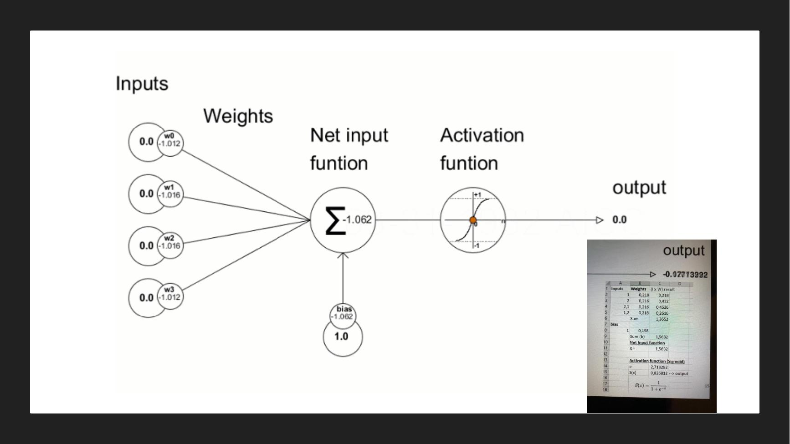
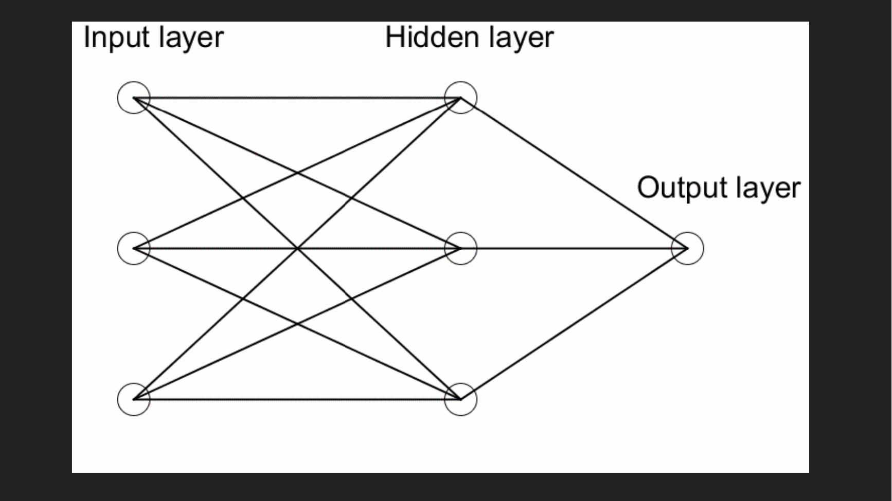
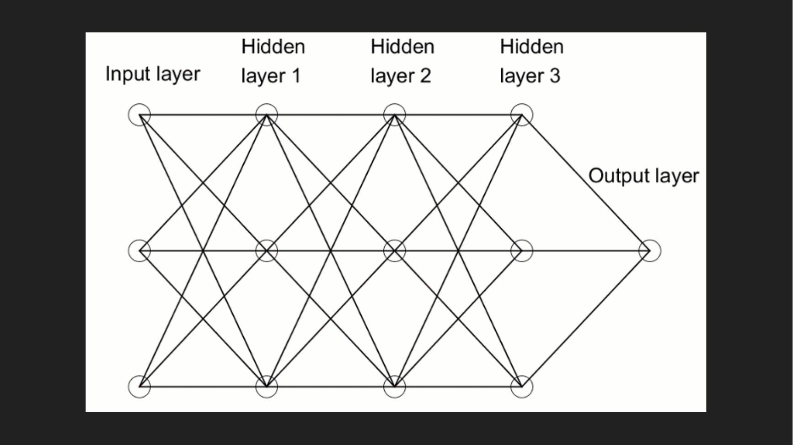

DIAPOSITIVES 25 à 29
Quatre étages, du neurone artificiel au modèle de langue.
La comparaison est posée en deux images : « Biological neuron » et « Model of artificial neuron ». Le second n’imite pas le premier, il en emprunte le schéma de principe : des entrées, une sommation, un seuil, une sortie.



Les deux schémas sont conservés parce que le contraste est le propos : rien ne change dans la nature du calcul entre l’un et l’autre, seul le nombre de couches augmente. C’est la réponse en image à la définition donnée en fiche 5.
LLM : predict the next available word.
La chaîne se referme : du neurone à la couche, de la couche à la profondeur, et de la profondeur à une opération énoncée en cinq mots. Tout ce qui a été montré en fiche 2 et en fiche 3 sort de cette opération-là.